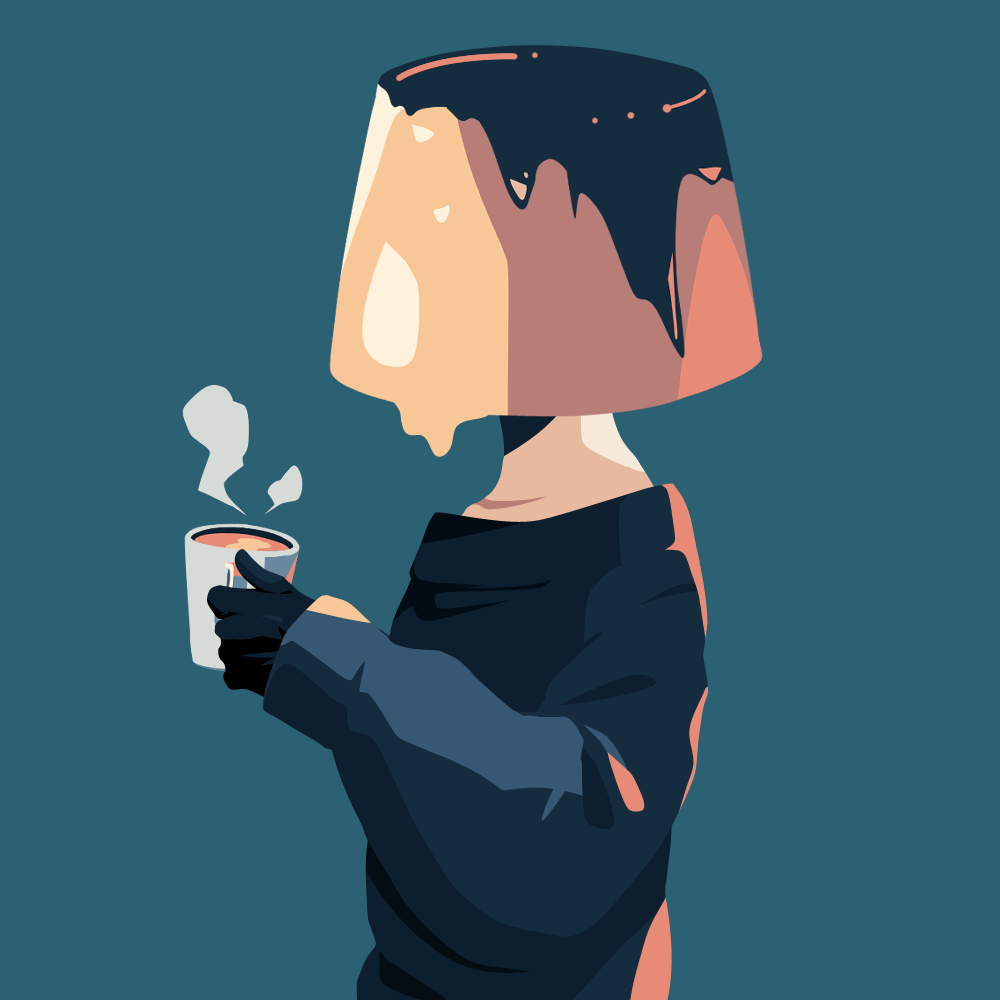

ABOUT / 自己紹介
気ままに、何でも作る。
声優、イラスト、シナリオ、開発。
自分でできることはなんでもやる、
ほぼ自給自足の０円食堂クリエイターです。
CREATOR PROFILE — GISHODO
toono-machi
声優 / イラスト / シナリオ / 開発
怠惰を極めすぎているプリン頭。
ミステリー、ホラー、ヤンデレ、サイコパスが大好物。
自分でできることはなんでもやる、
ほぼ自給自足の０円食堂クリエイターです。

ABOUT / 自己紹介
声優、イラスト、シナリオ、開発。
自分でできることはなんでもやる、
ほぼ自給自足の０円食堂クリエイターです。
AI TOOLS / 主に使用しているAIツール
スクリプト制作 / UIデザインのアシスト
UIデザインのアシスト / 背景グラフィックのアシスト
主題歌やBGM制作
LIKES / 好きなもの
少し不穏で、目を離せない。
そんな物語に惹かれます。
自分でできることは、なんでも。
VOICE
ILLUSTRATION
SCENARIO
DEVELOPMENT
ゲーム作品の情報は 偽書堂のトップページ からご覧いただけます。
CONTACT / ご連絡
お問い合わせは偽書堂の公式ページからお願いします。